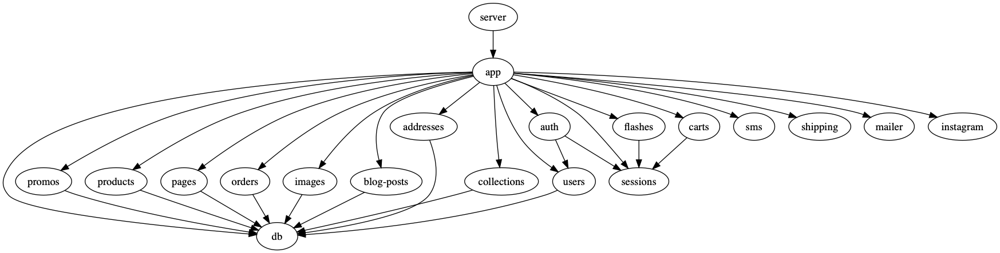

2 Architecture
Most of the functionality provided by this library comes in the form of components – bundles of data with associated behavior and well-defined startup and shutdown routines.
Applications that use koyo build their various bits of business logic as components and then bundle all of the required pieces into so-called systems that automatically wire dependencies between components and ensure that they are started and stopped in the right order.
That may sound a bit complicated (and perhaps a little bit tedious!) but this approach makes it very easy to test code in isolation and to see where the boundaries are between all the parts of your application.
Here is the component graph in a large e-commerce application built using this approach:

The above was generated by running raco koyo graph.